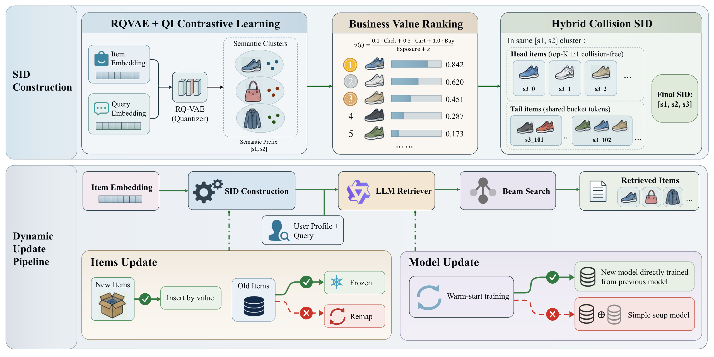
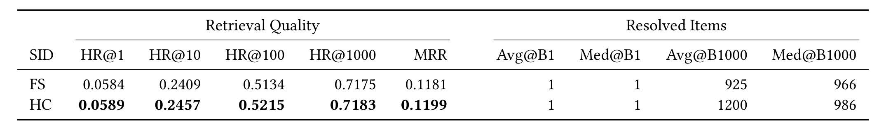
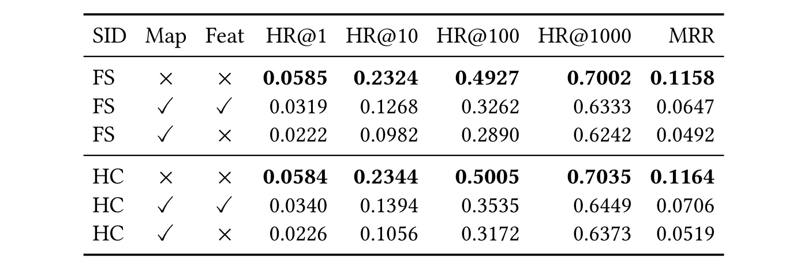
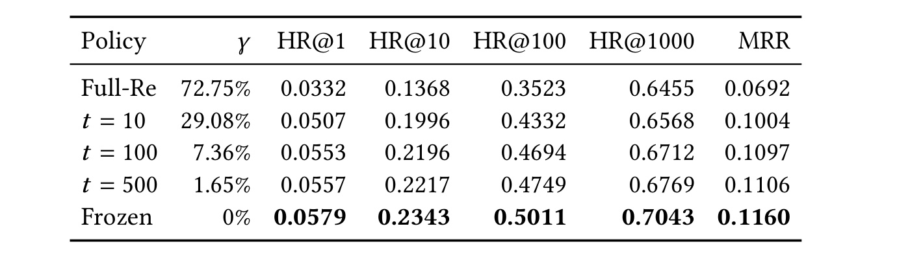
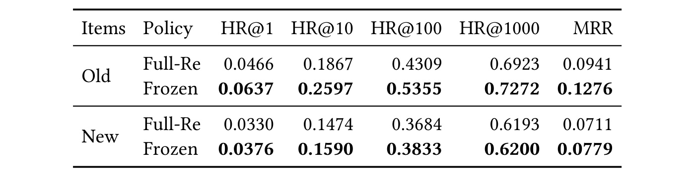
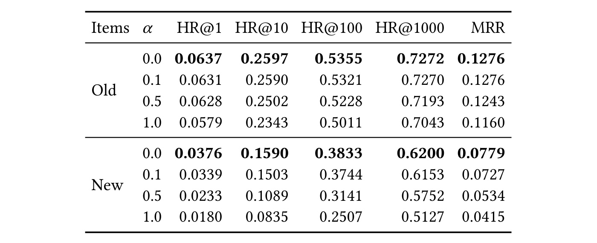
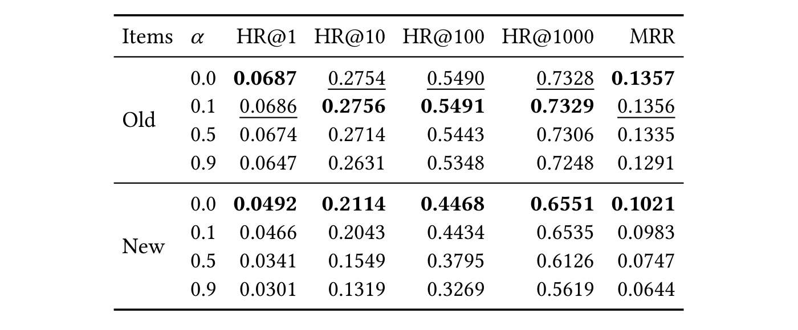

Don’t Rewrite the SID Map：动态电商生成式检索中的旧路径保护
论文：Don't Rewrite the SID Map: Topology Preservation for Generative Retrieval in Dynamic E-Commerce Search。第一作者 Jianbo Zhu，主要机构为阿里巴巴淘天集团，合作机构包括南开大学和中国科学技术大学。arXiv v1 发布于 2026 年 10 月 19 日，当前按预印本阅读；PDF 中会议名、年份和 DOI 仍是排版模板占位，不能作为已录用证据。论文入口。截至本轮核验，未找到独立、可检查的官方代码入口；以下实验数字均为作者报告，未进行训练复现。
这篇研究以真实电商搜索的持续上新为背景，把通常混在一起的索引刷新、输入特征刷新与模型继续训练分开控制。它的主要价值在于展示一种容易被召回大候选集掩盖的失效：商品标识更新后，模型依旧生成旧路径，但路径已经指向别的商品。
每次映射更新都可能使检索模型已经学会的搜索路径失效，而映射改变程度与检索质量之间的定量关系尚未得到系统刻画。
1. 背景和问题
生成式检索用几个离散 token 表达一个商品，再由语言模型直接预测这些 token。相比保存大量商品向量并做近邻查询，模型可以把查询、用户画像和历史行为一起映射到一个较小的离散输出空间。然而，真正的商品还位于模型之外的服务映射表里。生成概率很高的 SID 只有在解析后仍对应训练时的目标商品，才具有原来的检索含义。因此，一个完整的检索器不是单独一份模型权重，而是输入历史中的 SID 表达、输出 token 空间以及 SID 到商品关系共同组成的系统。本文研究的就是这些部件随时间失配后会发生什么。
电商搜索中的变化同时来自商品供给和商业价值。每天都有新商品达到进入检索池所需的曝光条件，老商品的点击、加购与购买表现也在变化。若第三层 token 表示商品在语义簇中的商业价值位置，重新计算排序就可能给旧商品换号。即使商品标题与图片没有变化，它原来所在的输出路径也可能失效。一个已经学会根据“适合某种场景的鞋”输出特定三层代码的模型，在映射刷新后可能仍沿那条路径生成，却取回商业价值排名后来占据该位置的另一件商品。这种错误不同于缺少新商品知识；前者破坏旧知识的解释，后者要求增加知识。
作者把这一现象称为 SID 语义漂移，进一步使用“拓扑”描述路径结构。这里的拓扑不是对几何流形给出新的数学定理，而是指自回归树中商品与解码路径之间已经建立的联系。前两层决定粗细语义分支，第三层继续选择叶子或共享桶。改动末层标签也会改变已有条件概率的语义；若重训量化器连前缀都改变，理论上的影响范围还会更大。不过，正文主要受控实验刷新的是价值相关的第三层，不能把其百分比直接当作任意语义量化器重训的损失。
一个难点是漂移在常见离线评估里并不总是明显。beam search 可以保留多条路径，宽度越大，越有机会沿次优分支找回目标。宽 beam 下的最终命中较高，既可能意味着高概率路径正确，也可能意味着大量冗余候选补救了路径错误。对于在线推理，候选数、解码成本和延迟都有约束，不能默认这种补救始终存在。因此作者同时观察从一条到一千条 beam 的检索质量，并引入 MRR 观察正确商品是否仍排在前面。它追问的是“原本优先生成的正确路径是否保住了”，而不只是最终大集合是否包含目标。
第二个难点是常规比较会把损坏和修复混成一个结果。映射更新同时带来商品覆盖增加、旧商品编号变化和训练样本新增，若只比较旧模型与更新后的整套系统，无法知道收益来自更多样本，损失来自错误路径，还是两者相互抵消。本文将映射策略和训练策略作为两个独立维度：映射可以全部刷新、按阈值部分刷新或冻结旧商品，训练可以保持模型不变或从旧 checkpoint 继续训练。这样能在同一初始化与近似同样的数据预算下问：继续训练是否值得先付出大规模换号的代价？
论文的定位因此更接近部署原则的经验研究，而不是提出更复杂的持续学习模块。已有工作可以通过对齐、选择性分词、参数适配或记忆结构减轻标识变化，本文先检验“是否应当制造这些变化”。这个问题很实用：若冻结旧号、插入新商品已经得到更好的结果，那么恢复复杂度就应当被证明有必要，而不能因为量化器或价值排序能够更新就自动全量更新。相反，研究并未证明复杂修复永远没有价值，也没有证明冻结在任何业务周期都最优。
读者需要区分三种“新鲜度”。商品集合的新鲜度可以通过给新商品加入现有前缀与末层桶来实现；查询与用户偏好的新鲜度可以通过低学习率继续训练来实现；旧商品价值位置的新鲜度则可能要求重新编码。本文选择优先保住前两者，同时暂不追随旧商品的全部位置变化。这是有成本的工程选择，因为老商品的价值先验可能过时，头部独占编号也可能在插入后形成碰撞。作者并没有消灭所有矛盾，而是用受控实验说明，在给定系统与时间窗口内，避免破坏已学路径比追求完全刷新更有利。
这个结论对生成式推荐也有启发，但不能直接等同于推荐排序结论。电商搜索具有显式查询，训练样本来自查询与商品交互，指标是命中与倒数排名；序列推荐的兴趣演化、曝光偏差和候选过滤可能不同。若迁移到推荐召回，首先要复用它分离映射与训练的实验设计，再测自己的旧商品与新商品分组，而不是照搬一句“永远不要改 SID”。尤其是商品池会淘汰、目录会合并、合规要求会强制删除时，保留旧路径需要版本治理，不能把稳定性变成对历史错误映射的永久维护。
还有一个容易遗漏的对象是历史行为序列。用户曾点击的商品在输入里常被表示为同一套语义标识，如果商品换号而历史没有同步，模型读到的前缀含义也会改变。即使服务表的输出解析更新正确，条件输入仍可能引导模型走错分支。因此，本文同时操纵输入特征与服务映射的设计，比单纯比较两个商品码本更加贴近真实发布。实践中缓存刷新、历史回填与模型发布可能各有周期，这使局部更新期间的兼容性格外重要。对这类系统而言，身份名称空间也是模型契约的一部分，不能仅以存储层已经写入成功作为上线验收。
同时，“旧商品”和“新商品”在这里是相对初始训练与更新周期的定义，并不天然等于高频与低频商品。老商品可能冷门，新商品也可能迅速成为爆品，二者的分组主要隔离模型是否曾有机会学习该身份。因此，摘要中的新品翻倍是从一个低基数阶段到学习后的变化，不是对全部冷启动问题的彻底解决。曝光门槛以前的新商品如何获得准入流量、完全没有交互时能否可靠泛化，仍是本文实验范围之外的问题。
2. 方法
2.1 问题形式化：标识变化就是已学路径变化
论文为每个商品分配三 token 标识，并采用标准自回归似然训练。给定用户和查询，每一步预测都依赖先前 token；因此终点与中间路径一起被学习。
符号解释：$i$ 是商品，$s_1,s_2$ 是两层语义 token，$s_3$ 是末层商业价值或碰撞桶 token；这对应原文公式（1）。
符号解释：$q$ 是查询，$u$ 是用户画像及历史上下文，$\theta$ 是模型参数，$s_{\lt k}$ 是当前位置之前的标识前缀，$\mathcal L$ 是目标 SID 的负对数似然；这对应原文公式（2）。
训练标签和线上解析表必须表达同一套商品身份。 推理先生成多条 SID，再通过映射表解析为一个或多个商品。冻结模型但替换映射，等于在保留输出概率时改变概率所指的对象。为了量化改动，作者统计旧商品中被换号的比例。
符号解释：$\mathcal I$ 在实验中取旧商品集合，$M_{t_0}$ 和 $M_{t_1}$ 是训练时与当前服务时的 SID 解析关系，$M^{-1}(i)$ 表示商品被分配的 SID，$\mathbf1$ 是条件成立时取一的指示函数，$\gamma$ 是被改写的旧商品比例；这对应原文公式（3）。
这里的逆映射记号需要按“每件商品被分配一个 SID”理解，不能误读为要求 SID 到商品是一一对应。后文明确允许多个商品共用一个代码。这个统计量只计是否改变，不计改动深度、商品流行度、前缀改变数量或原路径置信度，因此相同的换号比例未必在不同系统里产生相同损失。它足以给本文的第三层价值重排做剂量对照，但不是完整的漂移距离。
2.2 SID构建与检索模型：允许碰撞，保护既有编号
前两层语义前缀由 RQ-VAE 对商品内容嵌入量化获得。训练采用 CQ-SID 的查询—商品对比学习框架，在重建与承诺项之外加入双向 InfoNCE，使量化器不仅按内容相近聚类，也兼顾搜索相关性。前两层码本规模为 $8192\times8192$。第三层则在同一语义前缀内按商业价值排序，使用如下原文公式。
符号解释：$v(i)$ 是商品商业价值分数，Click、Cart、Buy 分别是点击、加购与购买次数，Exp 是曝光次数，$\epsilon$ 是平滑常数；系数是论文系统的固定配置，这对应原文公式（4），不是通用业务价值定价公式。
作者比较两种末层设计。全稀疏设计为商品分配独立标识，末层最多使用八千余个桶；混合碰撞设计在每个前缀下给价值最高的一百件商品独占 token，尾部按固定大小分组共享桶，额外最多使用一千零二十四个碰撞桶。后者总末层容量为一千一百二十四。它接受尾部的一对多解析，以有限词表承载持续增加的商品。必须留意这些上限描述的是标识方案容量，而不是论文已经证明永远不会满的动态存储保证。

Figure 1 的上半部分从商品嵌入与查询嵌入出发，经量化器得到语义簇，再用商业价值分配末层标识，最后形成完整三元 SID。右侧把头部独占与尾部共享画在同一个前缀内，说明碰撞不是另一个召回通道，而是同一 SID 解析时允许产生多个商品。下半部分连接用户画像和查询、检索语言模型、beam search 以及最终商品解析；它也把系统更新分成商品侧与模型侧。绿色商品路径保留旧商品标识，仅插入新商品；绿色模型路径从旧模型继续训练后直接使用新 checkpoint。红色商品路径改写旧号，红色模型路径混合新旧参数。这两个红色分支在图中被并列展示，但因果上仍需分别实验：图本身不能证明重映射和权重混合属于同一种损坏，更不能把任何模型平均都说成错误。
新商品先达到曝光准入要求，再经原量化器得到前缀，根据当前价值位置插入第三层编号。插入不移动已有商品。 一个新商品若落入头部位置，可以与原来独占该位置的旧商品共享 token。于是“头部一对一”只在最初训练时的 SID 集合中成立；动态插入后的在线表未必保持这一性质。这个细节解释了稳定性如何获得：系统放弃维护绝对无碰撞，从而不必为了给新商品腾出排名位置而连锁重编号。零旧号改动并不意味着对线上候选数、桶内竞争和后续排序零影响，仍需额外评估。
检索模型使用 Qwen2.5-0.5B，最初依次学习商品内容到 SID、查询到 SID、用户加查询到 SID。三个阶段从基本内容标识关联扩展到查询相关性和个性化。更新时只重新执行第三阶段，用新积累的查询—SID 对继续训练。训练输入包含行为历史，因而历史里的 SID 特征也存在版本问题；线上并非只替换一个输出表就完成迁移。方法中的数据流因而很明确：商品内容用于获得前缀，价值事件用于插入末层位置，交互数据用于更新模型，而已有商品身份路径在这些动作中保持稳定。
2.3 更新策略：把映射与训练拆成独立变量
全量重映射使用最新价值排序重新分配旧商品末层 token；冻结策略保留全部旧号，仅为新商品插入可用的独占或共享标识；阈值策略仅在价值名次变动超过给定阈值时为旧商品换号。作者用后一策略构造从强刷新到完全冻结的连续实验范围。
符号解释：rank 是商品在所在前缀内的价值名次，$t$ 是允许的名次位移阈值，只有不等式成立时才重映射；$t$ 越大通常换号越少，这对应原文公式（5）。
每种映射又可搭配不训练或热启动。热启动从同一旧 checkpoint 出发，使用按各自当前映射标注的新数据，不重新训练全部初始阶段。这个控制将“是否换旧号”与“是否吸收新交互”拆开，但不能理解为两组的 token 标签完全相同；它们共享商品交互来源，标签因映射策略而异。本文关心的恰恰是这种重标记是否消耗有限的学习预算。
最后作者测试旧模型与热启动模型的线性权重混合，希望检查旧知识与新知识能否通过无额外训练的折衷获得更好结果。
符号解释：$\theta_{\mathrm{old}}$ 是旧 checkpoint 参数，$\theta_{\mathrm{new}}$ 是从它热启动后的参数，$\alpha$ 是旧模型占比，零表示直接使用新模型，一表示完全保留旧模型；这对应原文公式（6）。
混合实验在冻结 SID 策略下进行，所以能够相对独立地观察参数平均是否带来收益。它测试的是同一路径更新得到的两个 checkpoint 的简单线性插值，不能扩展成对多模型集成、选择性参数合并或具备验证集调参的所有 soup 方法的否定。方法整体没有新加大型网络模块，其贡献主要来自把常被绑定的操作拆开，并提供能够支持部署取舍的对照。
3. 实验结果
3.1 时间切分与碰撞设计的基础对照
数据来自大型电商搜索平台连续六十七天日志，前三十天训练初始模型，之后三十天构成第一个更新与评估周期，最后七天构成后续非重叠周期，并从第一个更新周期结束的模型初始化。训练交互严格早于对应评估事件。原文把初始训练结束后第一天记为 Day-1，因此 Day-30、Day-37 是这一相对时间轴上的日期，并非整个六十七天观察窗的绝对日序。两轮使用不同时间段，能检查短期重复出现的趋势，但不是独立平台或独立随机实验的重复。
三十天更新约使用九千万条日志，七天更新约使用两千万条。初始模型训练一万步、学习率为四乘十的负五次方，热启动学习率为一乘十的负五次方，第一轮五千步、第二轮一千二百步。作者写到六十四张 GPU、batch size 六十四、累积四步且有效批量二百五十六，但没有进一步明确全局与单卡口径；复现时需要确认，不能自行乘上卡数后声称那就是论文全局 batch。命中指标覆盖四个 beam 宽度，MRR 在一千候选宽度内计算，各策略使用相同 SID 展开与指标计算方式。

Table 1 的问题是：后续冻结方案采用碰撞桶，会不会一开始就因碰撞严重损失质量？HC 的 HR@1 为 0.0589，FS 为 0.0584，相对提升约 0.86%；HR@1000 分别为 0.7183 与 0.7175，差距很小；MRR 为 0.1199 对 0.1181。数据说明受控碰撞至少在这组首日样本里没有形成明显瓶颈。更细的候选数列也很重要：beam 为一时两者解析商品均值和中位数都为一；beam 为一千时 HC 均值一千二百、中位数九百八十六，FS 均值九百二十五、中位数九百六十六。这意味着 HC 的平均候选扩展更多，不能把召回率略高完全归因于更好的路径概率。作者用中位数相近反驳模型只偏好大簇，但这仍不足以替代候选预算严格对齐的实验。论文没有给这些小差异的置信区间，不能称其统计显著。首条路径的相对改善以全稀疏方案的命中率为分母，而不是增加零点八六个百分点；一千宽度的相对改善约为百分之零点一一。均值明显超过中位数还提示，额外候选可能集中在少部分较大共享桶中。要判断碰撞能否节省真实服务资源，需要继续测候选数分布尾部和解析后的排序成本，本表本身只证明当前评估口径下的质量没有恶化。
3.2 宽beam如何掩盖映射漂移

Table 2 固定商品集合且不做热启动，分开刷新服务映射 Map 和输入交互序列 SID 特征 Feat。HC 两者冻结时 HR@1 为 0.0584；两者同时刷新降到 0.0340，约下降 41.78%；只刷新 Map 则进一步降到 0.0226。后一种错误不仅让模型权重与映射不匹配，还让旧输入特征与新服务表互相矛盾。这个对照说明“让输入特征也新鲜”只能缓解一部分版本不一致，不能自动修复已经存在于模型权重中的旧路径。若只看一千宽度，HC 同时刷新从 0.7035 降到 0.6449，只下降约 8.33%；Map 单独刷新为 0.6373，约下降 9.41%。因此大候选评估把损失压缩到了看似更容易接受的范围，却没有恢复最优先路径。
跨 FS、HC 及两种刷新组合，HR@1 下降范围为 41.78% 至 62.05%，HR@1000 为 8.33% 至 10.85%。这是同组条件下不同 beam 的相对下降，不能把两个区间的差直接称作“系统恢复比例”。MRR 下降位于二者之间，反映前排质量也被破坏。这里需要特别防止一个推断跳跃：这些实验支持宽 beam 掩盖漂移，却没有单独测量在固定时延预算下的在线损失曲线，也没有证明将 beam 开到一千一定不值得。应当把多 beam 诊断加入更新验收，再结合自己的延迟与候选预算决定服务点。
3.3 换号比例与质量的受控关系
未热启动的新商品结果在 Table 3 中相近：全量重映射与冻结的 HR@1 分别为 0.0187 和 0.0180，HR@1000 为 0.5133 和 0.5127。它没有呈现“为了让新商品可检索，必须改写大量旧号”的证据。不过新商品组如何准入、共享桶分布和曝光选择都会影响这一结果，不能只凭相近数值宣称两策略在所有新品场景等价。

Table 4 把阈值和实际换号比例联系起来。全量重映射并非字面上每件商品最终 SID 都变了，而是对全部商品重新计算，实际旧号变动率为 72.75%。阈值十、一百、五百分别得到 29.08%、7.36%、1.65%，冻结则为零。对应 HR@1 从 0.0332、0.0507、0.0553、0.0557 上升到 0.0579，HR@1000 从 0.6455 上升到 0.7043，MRR 从 0.0692 上升到 0.1160。所有被报告指标在这些离散策略点上都随换号减少而改善，全量重映射相对冻结的 HR@1 下降约 42.66%。这就是论文“严格单调”的实证来源，不能误写成对连续任意换号率或所有分布成立的数学定理。
阈值十仍比完全冻结的 HR@1 低约 12.4%，说明在此窗口内，保留少量价值刷新并未形成优于冻结的折衷。冻结并不停止整个系统变化：加入新商品后旧商品 HR@1000 从不加新品时的 0.7035 到 0.7043，作者将其与输入历史获得新品信号联系起来，但差值很小，缺少误差范围，不能据此独立证明因果机制。更有说服力的是跨多个换号水平、多个 beam 的一致方向。若业务中确实需要重映射，下一步应按前缀、商品价值与换号深度拆分，而非只用整体平均比例寻找一个万能安全阈值。
3.4 同一热启动预算下，保留旧号能否同时服务新品

Table 5 从同一个 Day-1 模型出发，使用相同时间段积累的交互做热启动，主要变化是标签映射。旧商品的 Frozen HR@1 为 0.0637，Full-Re 为 0.0466，前者相对后者高约 36.70%；新商品分别为 0.0376 与 0.0330，相对差约 13.94%。这一分母与摘要“旧品约百分之十、新品约百分之一百零九”不同。摘要比较的是冻结策略热启动前后：旧品 0.0579 到 0.0637，约增加 10.0%；新品 0.0180 到 0.0376，约增加 108.9%。这些是 HR@1 相对变化，既不是百分点，也不是全部指标统一提升这么多。新商品基线较低，所以翻倍在绝对数值上是增加 0.0196。
把视野转到宽 beam，Frozen 热启动的旧品 HR@1000 为 0.7272，而未训练冻结基线为 0.7043，约增加 3.3%；新品从 0.5127 到 0.6200，约增加 20.9%。说明新关联学习在更宽召回集合上仍有价值，但提升幅度与 HR@1 很不同。全量重映射热启动后旧品 HR@1000 为 0.6923，甚至低于不训练但冻结的 0.7043；MRR 为 0.0941，也低于 0.1160。它直接支持“当前简单、有限预算的继续训练没有抵消换号代价”，但没有证明拓扑一旦改变就无法恢复。若增加训练数据、步数、回放或专门对齐机制，结论可能变化，本文没有完成这条成本曲线。
3.5 权重混合、后续周期和线上验证

Table 6 固定映射为 Frozen，仅改变新旧 checkpoint 的插值权重。旧权重占比从零到一增加时，新商品 HR@1 从 0.0376 降到 0.0180，HR@1000 从 0.6200 降到 0.5127，MRR 从 0.0779 降到 0.0415。旧商品下降相对温和：HR@1 从 0.0637 到 0.0579，MRR 从 0.1276 到 0.1160。作者解释旧商品关联在两份权重中都有，新商品关联主要在新权重中，因此旧模型平均回去会削弱新学知识。这个解释合理，但论文自己也说明还需要预测分布分析；权重平均行为不能直接当成模型内部知识分解的证明。三十天表里直接使用新模型最优或并列最优，没有额外平均收益。由于各个插值模型的映射和候选解析方式一致，这一比较能够把变化更集中地归到参数混合上，而不是商品身份被重新编码；不过只覆盖有限几个权重点，仍不能保证未经测试的其他系数必然更差。参数定义也不能倒置：旧模型系数为零时全部使用热启动后的新权重，为一时全部使用更新前旧权重，新模型占比恰好是一减去这个系数。新品首条命中从旧端点到新端点的相对改善，分母是旧端点的一点八个百分点命中率；它衡量继续学习后的收益，不能解释为混合操作自身带来的增益。

Table 7 是从 Day-30 模型出发的第二次更新，不是重复在原三十天测试集上评估。直接用新模型时旧品 HR@1 为 0.0687、新品为 0.0492，HR@1000 分别为 0.7328 与 0.6551。旧权重保留 10% 时，旧品 HR@10 为 0.2756 对纯新模型 0.2754，HR@100 为 0.5491 对 0.5490，HR@1000 为 0.7329 对 0.7328，出现极小改善；但 MRR 表中为 0.1356，略低于纯新模型的 0.1357。正文把 MRR 也列入略高项目，与表内数字不一致，应优先按表读取。因此准确结论是纯新模型总体最优或近似最优，部分旧品指标存在微小混合优势，不能概括成所有点严格单调、所有指标完全无例外。
线上系统在 TmallAPP 搜索召回阶段与其他通道共同工作，旧号冻结、新商品日更、模型每七天热启动一次，动态 beam 为五十、二百或一千，平均端到端延迟约五十毫秒。三周、20% 实时流量的 A/B 对照是两个月前训练后未周期更新、但同样冻结旧号并插入新品的模型。作者报告 UCTCVR 相对增加 0.29%、GMV 相对增加 1.16%。这组证据主要支持“在保留拓扑的系统中做周期热启动”相对老旧模型有效，并不是线上重映射对冻结的直接比较。论文没有披露置信区间、显著性检验、流量分桶细节或日级曲线，因此不能写成已证明统计显著，也不能把五十毫秒宣称为相对基线加速。线上收益是完整召回系统中的作者观测，应保留其他通道、重排及业务环境共同作用的边界。
此外，三周线上实验与离线两周期的对照对象应分开理解。离线的主要因果对比是在共享历史初始化与更新预算下改变映射政策；线上则以同样冻结旧号的老模型为基线，增加周期训练。前者回答重映射是否必要，后者回答冻结后继续学习是否有实际业务价值。两组证据可以共同构成部署理由，但不能相互替代，更不能将离线窄beam的大幅损失转换成线上转化率的预计损失。若要定量评估长期冻结对真实交易的影响，还需要包含映射策略独立分桶的在线对照。
4. 总结
这篇论文给出的最有价值结论，是生成式检索的更新首先应保持“模型输出含义可解释”。如果不改模型而换掉商品编号，同一个 token 序列会被服务表重新指向别处；继续训练固然能学习新品，却可能要先修复大量已有路径。作者通过映射与训练正交比较，说明在此电商环境及给定预算下，冻结旧商品、允许受控碰撞并插入新品，再从旧模型热启动，能同时改善新旧商品。它提供的是有清晰对照的经验原则，而不是关于所有离散标识系统的永久最优性证明。
可迁移的工程做法有三点。首先把量化器、商品到 SID 表、SID 到商品解析表、行为序列特征与模型 checkpoint 作为联合版本管理对象，验收时检查兼容关系。其次在相同时间窗口下分别统计新品、旧品和不同 beam，不能让大候选命中掩盖首条路径已经失效。最后，把“先保留旧号再热启动”设为成本较低的基线，任何更复杂的重映射、对齐或模型平均方案都需要在同样数据和服务预算上证明额外收益。这些是从论文设计推导出的应用建议，具体阈值和周期仍应以本地实验决定。
研究至少有四个清楚的局限。第一，主要受控结果来自单一电商平台和价值感知末层 SID，换号比例与性能的关系并未在多平台或纯语义 SID 上验证。第二，六十七天日志与两次更新不足以验证长期冻结的容量、桶拥挤、价值先验过时以及商品淘汰后的重用风险；“旧号永久冻结”需要更长期证据。第三，热启动只重跑个性化阶段且预算有限，没有与更强回放、蒸馏或迁移对齐方法进行同等成本全面比较，所以只能称当前策略没有修复，不能声称重映射不可修复。第四，离线表和线上相对收益缺少统计不确定性，尤其 HC 与 FS 的小差、第二轮混合的微小改善和线上 0.29% 的变化都不能越过显著性边界。第五，代码与私有日志不可公开核验，方法实现细节、批量口径、碰撞展开成本和线上随机化还需要作者补充。
后续最值得跟进的实验应围绕稳定性成本展开。一是把重映射率继续拆成前缀层级、商品热度和路径概率加权的损坏，检验同样换号比例是否存在特别危险的子群。二是在固定候选数量与固定延迟预算下比较冻结、共享桶和重映射，排除候选膨胀本身解释召回差距。三是延长到更多更新周期，监测每个桶占用、冷启动覆盖、旧商品价值失真与模型学习效率，再确定何时需要版本迁移或小范围重编码。四是补齐线上按天曲线、置信区间和重映射直接对照，判断部署收益能否稳定复现，而不是只看一个累计百分比。
对推荐与广告工程的读者来说，最值得立即检查的是自己的评估是否把身份语义变化当成普通数据更新。离散 ID、向量码本和召回缓存都可能携带历史学习路径；稳定的名称空间往往能降低持续学习负担。但若新商品无法准入、碰撞过多或业务价值偏移已经改变目标分布，就必须重新权衡。本文让这个权衡具备了可测的入口：先记录旧号变动率，控制训练预算，再看新旧分组与窄宽 beam 的响应，而不是用抽象的新鲜度口号替代证据。